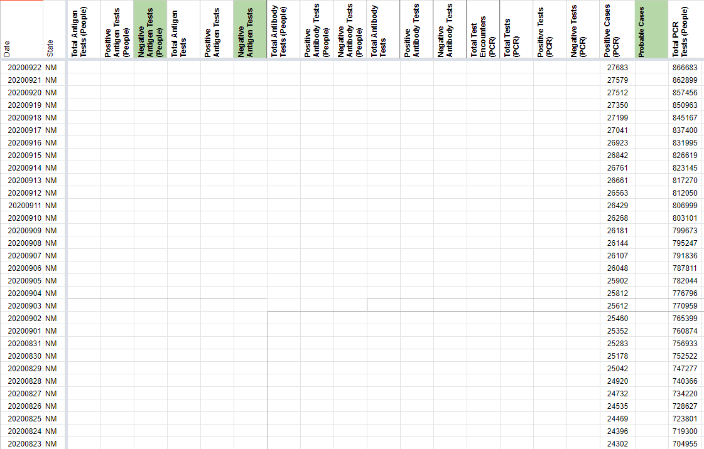
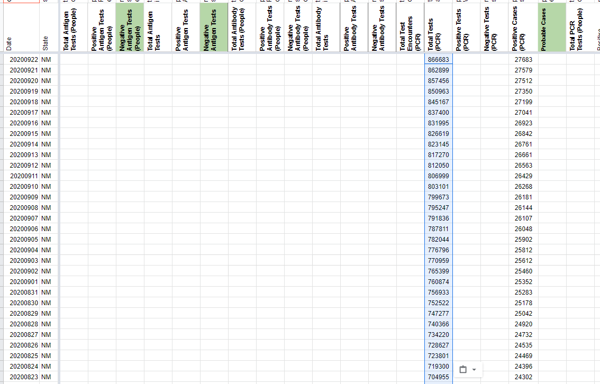

[NM] Switch tests captured from Total Tests PCR (People) to Total Tests (PCR) 5/13-9/22
Issue number 860
muamichali opened this issue on September 23, 2020 at 7:41 am
Labels Data quality stale
State or US: New Mexico
Describe the problem Per outreach, New Mexico reports tests in specimens, not unique people.
Link to data source "At the beginning of testing in New Mexico, we reported on number of persons tested. This was the Governor’s office request for testing all New Mexicans. This wasn’t a problem because tests were so sparse most people were tested once, unless positive. We only count positives the first time because of circulating bits of RNA which is no longer infectious after 10 days of infection. On 5/13 we changed to reporting all tests done daily including positive repeats to better measure resources used. The info page is not reflective of the testing to date. They are the total # of tests not persons tested. " David Morgan, PIO DOH 9/21
Action Plan
- [ ] Move 5/13-9/22 time series from Total Tests PCR (People) to Total Tests (PCR)
This issue has been automatically marked as stale because it has not had recent activity. It will be closed if no further activity occurs. Thank you for your contributions!
This issue has been closed because it was stale for 15 days, and there was no further activity on it for 10 days. You can feel free to re-open it if the issue is important, and label it as “not stale.”
Before 
After 